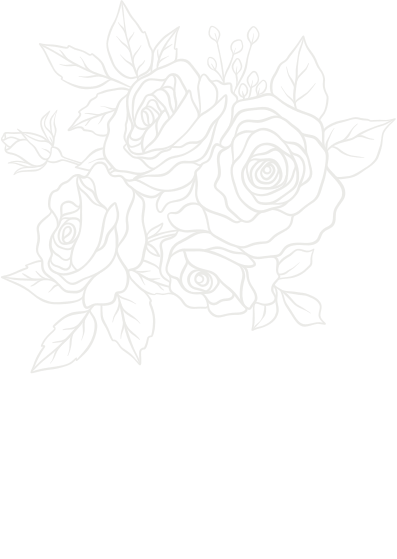

“Di antara tanda-tanda (kebesaran)-Nya ialah bahwa Dia menciptakan pasangan-pasangan untukmu dari (jenis) dirimu sendiri agar kamu merasa tenteram kepadanya. Dia menjadikan di antaramu rasa cinta dan kasih sayang. Sesungguhnya pada yang demikian itu benar-benar terdapat tanda-tanda (kebesaran Allah) bagi kaum yang berpikir.”

Dengan memohon rahmat dan ridho Allah SWT, kami bermaksud mengundang Bapak/Ibu/Saudara/Saudari untuk menghadiri acara pernikahan kami.
Mempelai Pria
M. Rizky Adi Prasetyo
Putra dari (Alm.) Bapak Suharto & (Almh.) Ibu Lastri